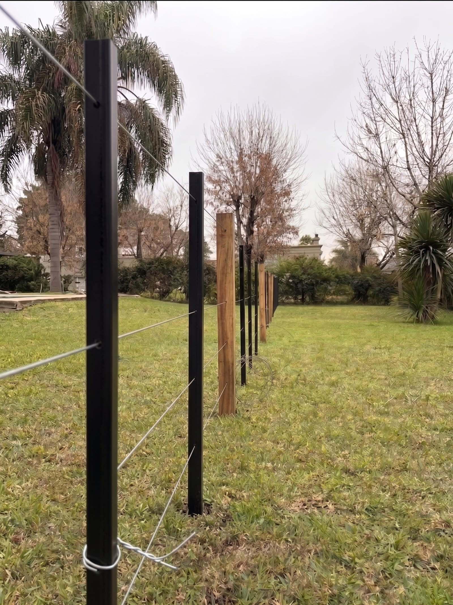
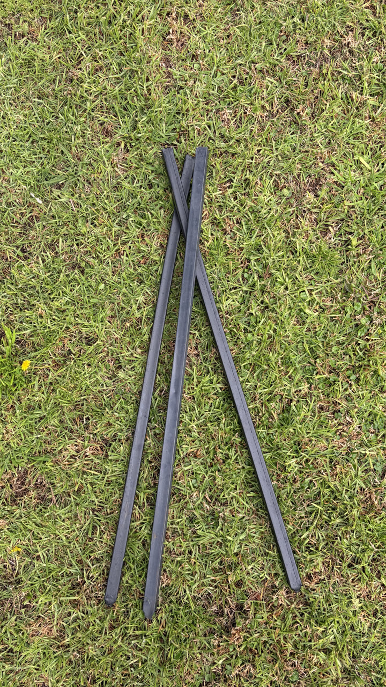
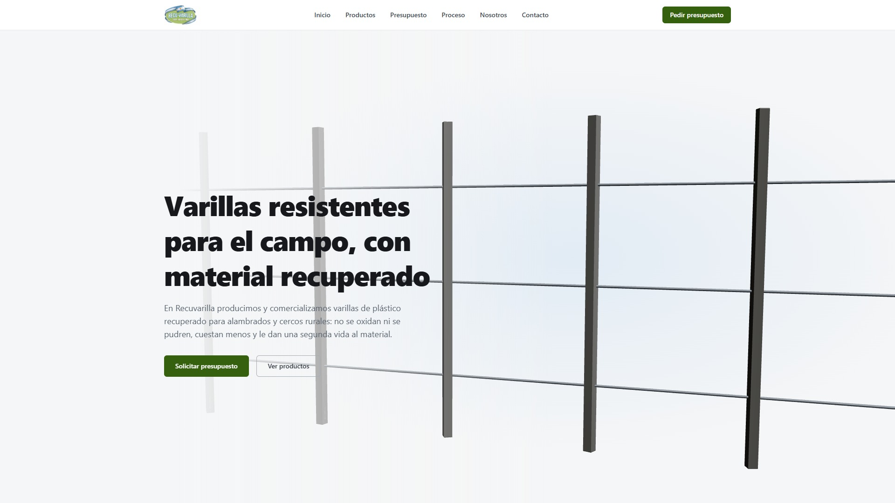
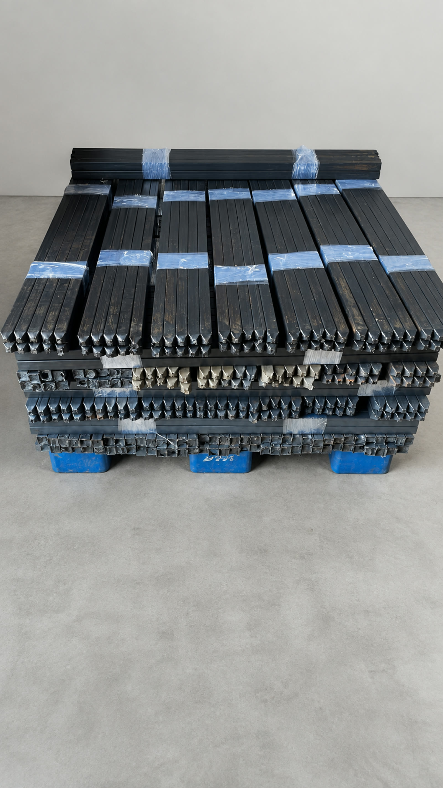
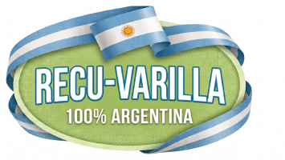

La madera se pudre.
El hierro se oxida.

Esta no.
Varilla de plástico recuperado

Resiste la intemperie
sin mantenimiento.
120 cm de largo
3 × 3 cm
No se oxida ni se pudre


Poné la cantidad
y tenés el precio.
En la web, sin esperar a que alguien conteste.
¿Cuántas varillas?
Sin agujerear
Agujereada
500 varillas ×
$2.850
$1.425.000
Retiro en Luján
Sin cargo
Total mercadería sin IVA
$1.425.000

Varillas para el campo,
hechas con plástico recuperado
+54 9 11 2395-8302
Luján, Buenos Aires